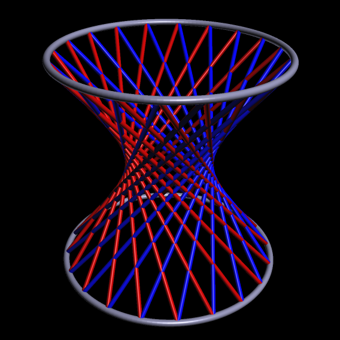
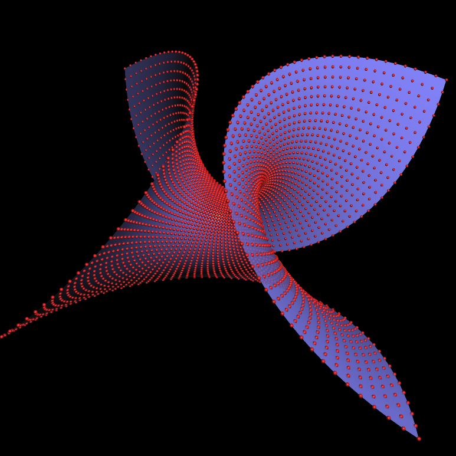

プラグイン
CindyScript を用いてCinderellaの動作を強化したり個人用にすることができます。自分で書いたJavaのプログラムとCinderellaを連携させることが望ましいことがあるでしょう。Cinderellaのプラグイン構造はそのような方法を与えます。プラグインを使うのが望ましいことはいくつかあるでしょう。 ここではそれらについて解説します。
- パフォーマンス: いくつかの CindyScript の動作に遅いものがあります。これについて、最適化されたコードを使えば速くなります。
- ネイティブライブラリ: 時々、３Ｄグラフィクスの Jogl ライブラリのようなネイティブライブラリを使いたいことがあります。このような場合、Cinderella とそのライブラリをリンクすることができます。
- ライセンスの認可: プラグインは、GNU GPLのようなライセンスのもとでシンデレラを拡張することができます。われわれは、これを利用して将来的にはシンデレラにオープンソース拡張機能をつけることを考えています。
- サードバーティのコード: プラグインはシンデレラプロジェクトに含まれる他のJavaコードのようによい基盤となります。
このマニュアルを書いている時点では、プラグインはスタンドアロンとしてしか使えません。近い将来にはアプレットとして使えるようにします。
プラグインの設計
プラグインを設計についての詳しいことについては http://cinderella.de/plugins
プラグインそのものは、実行可能なJavaクラスを含む
.jar ファイルです。プラグインの中心的なリンクは、シンデレラへの機能として書き出されたJavaのクラスファイルです。シンデレラでは CindyScriptを使ってプラグインにアクセスします。 プラグインの中心となるファイルはJavaクラス CindyScriptPluginを拡張するものでなければなりません。この親クラスは cindy2.jar ファイルを通して利用できます。プラグインのためのコードは次のようなものです。
import de.cinderella.api.cs.CindyScript;
import de.cinderella.api.cs.CindyScriptPlugin;
import java.awt.*;
import java.util.ArrayList;
import java.util.Arrays;
public class ExamplePlugin extends CindyScriptPlugin {
public String getName() {
return "Example Plugin";
}
public String getAuthor() {
return "Ulrich Kortenkamp and Juergen Richter-Gebert";
}
@CindyScript("sayHello")
public String testFunction() {
return "Hello from Plugin";
}
@CindyScript("square")
public double quadrieren(double x) {
return x * x;
}
@CindyScript("grayvalue")
public double getGray(Color c) {
return (c.getBlue() + c.getRed() + c.getGreen()) / 3.;
}
@CindyScript("testarray")
public String writeArray(ArrayList al) {
return Arrays.toString(al.toArray());
}
}
@CindyScript("square") といったコードは、CindyScript からアクセスするための名前を定義します。プラグインは CindyScript 次の use 関数を用いて呼び出します。:Loading a plugin: use(<string>)
説明：この関数は引数で与えられたプラグインを呼び出します。これは、 CindyScriptのinitialization スロットに置きます。
したがって、上のプラグインは、次のようにして呼び出します。
use("ExamplePlugin");
println(sayHello());
println(square(4));
println(grayvalue((0.7,0.4,0.1)));
println(testarray([1,2,3,4,5]));
出力はつぎのようになります。
Hello from plugin 16 102.3333 [1.0, 2.0, 3.0, 4.0, 5.0]
すべてのクラス・キャストは自動的に実行されます。キャスティングルールの詳細については、オンラインドキュメントを参照してください。
利用できるプラグイン
現時点では、利用できるプラグインはわずかです。私たちは、作成されたプラグインを、ウェブサイトhttp://cinderella.de/plugins
Cindy To LegoNXT
このプラグインはMichael Schmidによって書かれ、レゴマインドストーム NXTブロックに高水準インターフェースを提供します。このプラグインで、レゴ・コンピュータのすべての入出力にアクセスしてコントロールすることができます。したがって、レゴ・ロボット用のコントローラとしてシンデレラを利用することができます。
たとえば、この中に
nxtforward(...), nxtturnright(...), nxtgetlight() といったコマンドがあり、これらを使って CindyScript からロボット自動車の細かい動きをコントロールすることができるのです。プラグインは私たちのウェブページから短い説明文とともにダウンロードすることができます。
Cindy3D
もう一つのプロジェクトは、シンデレラのための3D描画をおこなうJOGL 3Dインターフェースです。このプラグインは Cindy3D と呼ばれ、Matthias Reitinger, Jürgen Richter-Gebert , Jan Sommerが設計しています。このプラグインを用いて、CindyScript から3D描画関数をを使うことができます。関数は、点、線、円、多角形と3次元メッシュを引くものです。
次の3つの図はCindy3D を用いて描画した例です。
 | |
 |
Page last modified on Thursday 23 of February, 2012 [00:02:28 UTC].
The original document is available at
http://doc.cinderella.de/tiki-index.php?page=PluginsJ